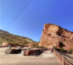

Houston is a vibrant and diverse city located in the state of Texas, USA
Houston, Texas, experiences hot and humid summers, mild winters, and a significant amount of rainfall throughout the year.
Around 2,288,000 folks.
The Houston Texans represent the city in the NFL, while the Houston Rockets are a prominent NBA team
| Photo | Date | Description |
|---|---|---|
| Jan 16, 2018 | View from the top row; sitting area holds 9,525 people | |
|  | Feb 20, 2017 | Facing south from the top of the ampitheatre |
|
Mar 30, 2019 | Nearby red rocks sit 6,450 feet (1,970 m) above sea level |
| Copyright © 2019 Zippy Photographers | ||